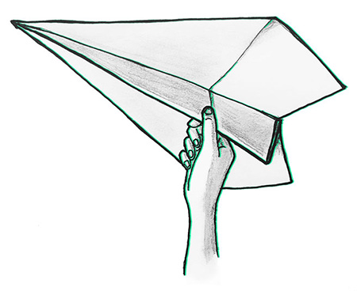

jade
young
communication
specialist
I am no hero, but I have
a journey to tell
The world is a complex place filled with complex people. I, too, am complex. But I can simplify what I am best at to one characteristic: I can make sense of things. I can connect isolated facts to create a coherent story. Then, I can also tell that story.
Here, I’ll tell you my story:
call to adventure
I am currently working as the lab manager and communication lead at Xinfab Fab Lab Shanghai, the first fab lab in China. I accepted the challenge of running Xinfab in search of a new adventure, where I could put in practice my skills in a different context and learn new skills. And oh, have I learned.
I learned a great deal about communication in the world’s most fast-paced and ever evolving market that is China, with its uniqueness and communication channels of its own. At Xinfab, I also got the chance to learn hands-on digital fabrication skills that I in turn began to teach.
initiation
My curiosity about fab labs and the maker culture originated at the International Committee of the Red Cross, where I briefly joined the innovation team as a communication associate prior to moving to Shanghai in early 2017. At the ICRC, I heard and told stories about humanitarian innovation. Soon enough I knew I wanted to make, and not just tell.
Before joining the ICRC, I worked as a communication consultant at the International Labour Organization (ILO) while studying a Master’s program in Communication Design and Advertising at the Barcelona School of Design and Engineering (ELISAVA).
At the ILO, I started in 2012 as an intern working on research. I then gradually took on communication-oriented work based on my natural interest and ability for it. After 2 years of performing a large array of communication tasks, I decided to fully dedicate myself to this field of work. I packed my things and took my energy and motivation to Barcelona, to perfect my skills at ELISAVA.
What I lived and learned led me to where I am now, catching soaring ideas in the air and bringing them a bit closer, within reach of those they are intended for. But before I got here, I had a few different experiences.
transformation
For nearly 10 years, I lived in Geneva, Switzerland, where I went to Geneva University and the Graduate Institute of International and Development Studies. I juggled International Relations and bartending, then Asian Studies and waiting tables. Oh, I was also a hostess at a variety of events.
I also lived in Shanghai in two other occasions. The first time, I juggled words: I learned Mandarin at the Shanghai Normal University and taught English, both as a private tutor for adults and as a teacher in a language school for children. The second time, I juggled theory and reality: I came to write my Master’s thesis on the puzzling boundary between the public and private sphere in China.

return with elixir
I am from Belo Horizonte, Brazil. I started working at 16 as an administrative assistant at a mining company while attending high school. Then I went on from working in a tourism development project to a dance company and to a hospital (not as a doctor!).
My experiences, as varied as they were, taught me something fundamental for what I do: communication. They taught me how to connect with and understand people, understand how to get a message across — in English, French, Portuguese, Spanish and (some) Chinese.